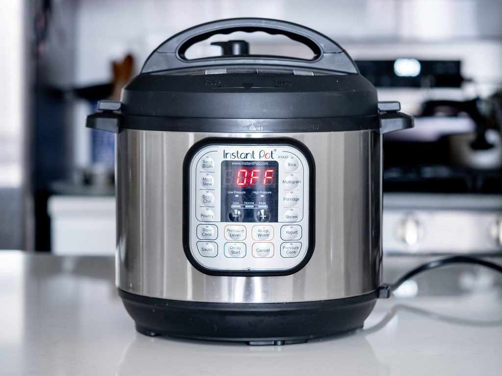
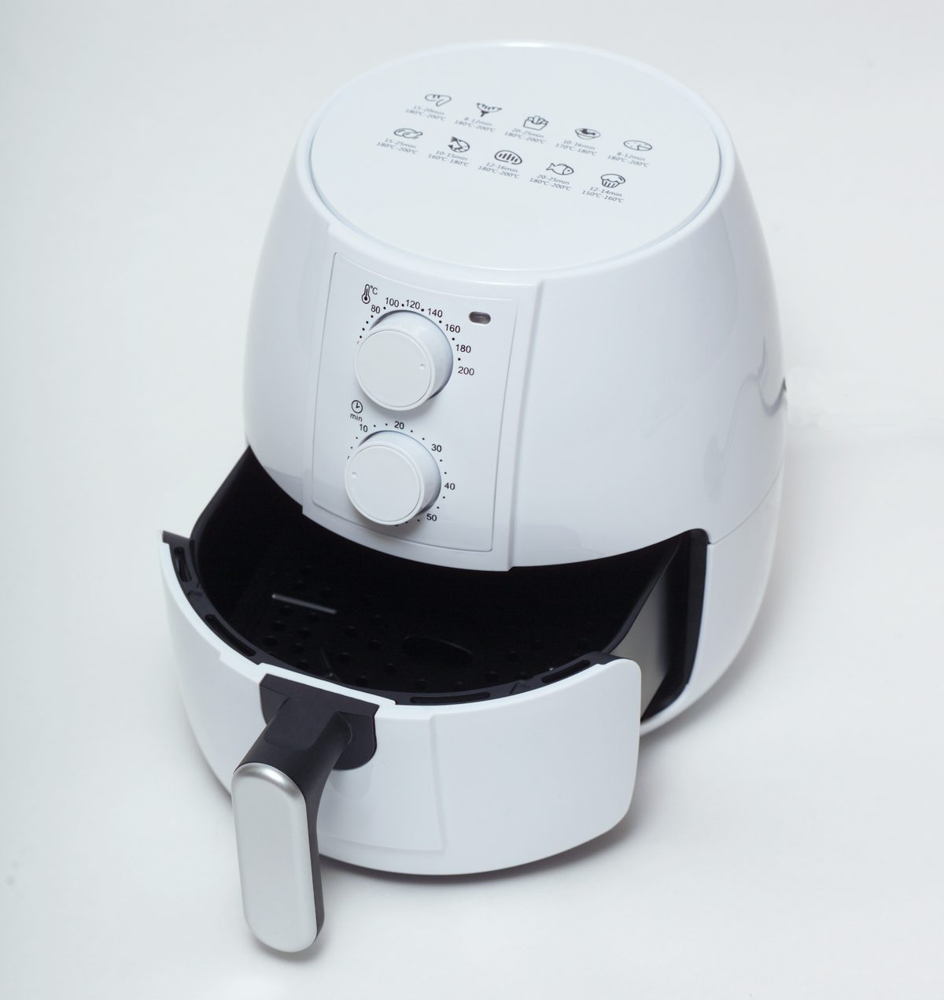
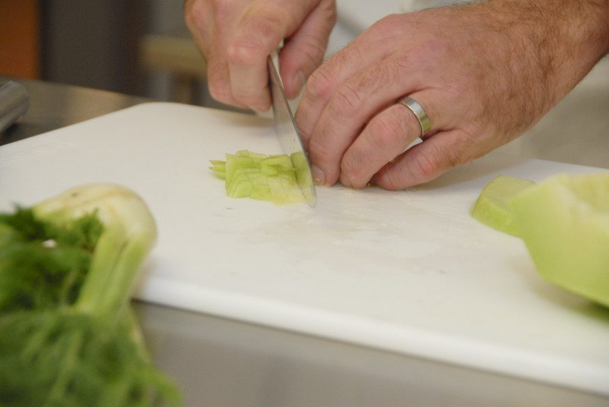

Essential Kitchen Gear for Meal Prep
Four tools do 90% of the work in a meal prep kitchen. Everything else is nice to have — and most of it you can skip entirely.

The Instant Pot: the single biggest time-saver in our Sunday sessions.
Meal prep gear lists usually try to sell you a whole kitchen. This one doesn't. Every recipe on PrepFuel can be made with a pot, a pan, and an oven — these four tools just make it faster, which is the whole point of a 2-hour Sunday session.
The Big Four
Instant Pot (6-Quart)
The single best meal prep investment. Rice in 12 minutes, dried beans in 40, chili in 30, and shredded chicken in 15 — all hands-off while you prep the next thing. The 6-quart size is the sweet spot for one or two people prepping a week of food.
- Pressure cooker, slow cooker, rice cooker, and steamer in one
- Batch-cooks grains and beans while you do other prep
- Look for the Duo line — the best value, and the most recipes are written for it

Air Fryer (5–6 Quart)
Chicken thighs, roasted vegetables, and sweet potatoes come out crisp in half the time of an oven — and you don't have to heat the whole kitchen. A 5–6 quart basket fits about 1.5 lb of chicken in one round.
- Crispy chicken and vegetables with a teaspoon of oil
- Preheats in 3 minutes vs. 15 for an oven
- Don't go under 5 quarts for weekly prep — you'll cook in two rounds

Half-Sheet Pans (18×13 in), Set of 2
The workhorse of every PrepFuel recipe. Chicken, sweet potatoes, broccoli, egg muffins — nearly everything in the 7-day plan cooks on a sheet pan. Two pans let you run two batches at once. Buy heavy-gauge; thin pans warp and brown unevenly.
- Fits a full batch of chicken and vegetables at once
- Heavy-gauge aluminum or stainless steel won't warp
- Add parchment paper and cleanup takes 30 seconds

8-Inch Chef's Knife
One good knife beats a 15-piece set you'll never use. An 8-inch chef's knife handles 95% of meal prep cutting — chicken, onions, sweet potatoes, herbs. Spend the money here, and keep it sharp: a sharp cheap knife beats a dull expensive one.
- 8-inch blade is the most versatile size
- Full tang and a comfortable grip matter more than brand
- Pair with a $10 honing steel and sharpen every few weeks
Worth Adding Next
Once you have the big four, these are the next best additions — in order of usefulness:
- Digital food scale ($15–25). The only way to portion protein accurately. If you're tracking macros, this matters more than any appliance.
- Kitchen tongs (12-inch). For flipping chicken, tossing vegetables, and serving. You'll use them in every single session.
- Immersion blender ($25–40). Blends soups right in the pot — no transferring hot liquid to a blender. Essential for the red lentil soup in our budget guide.
- Large cutting board (18×12 in). Small boards are the number one cause of slow, messy prep. Wood or plastic, just get a big one.
- Rice cooker. Only if you eat rice most days and don't have an Instant Pot — otherwise the Instant Pot already does this job.
What to Skip
- Knife sets. Most of the knives stay in the block. One chef's knife + one paring knife is enough.
- Single-use gadgets. Avocado slicers, garlic presses with 12 parts, egg separators — they clutter drawers and a knife does the same job.
- Expensive nonstick pans. A $25 skillet replaced every couple of years beats a $150 one you baby. Save the money for the Instant Pot.
- Specialty meal prep gadgets. If it only does one thing and it isn't in the big four, you don't need it yet.
The starter budget: an Instant Pot, an air fryer, two sheet pans, and a chef's knife run roughly $200–250 total — and they pay for themselves in a few weeks of not buying lunch. Buy them one at a time if that helps: Instant Pot first, then sheet pans, then the knife, then the air fryer.
Frequently Asked Questions
Do I need an Instant Pot for meal prep?
No — every PrepFuel recipe can be made with a pot, a pan, and an oven. But an Instant Pot cuts cooking time for rice, beans, chili, and shredded chicken by half or more, which is why it's our first recommendation if you buy one tool.
What size air fryer is best for meal prep?
A 5–6 quart air fryer fits about 1.5 lb of chicken or a full tray of vegetables in one batch. Smaller 3-quart models mean cooking in two rounds, which defeats the time-saving point for weekly prep.
How many sheet pans do I need for meal prep?
Two half-sheet pans (18×13 inch) cover a full Sunday session: one for protein and vegetables, one for a second batch. Buy heavy-gauge aluminum or stainless steel — thin pans warp in a hot oven.
Is one good knife enough for meal prep?
Yes. An 8-inch chef's knife handles 95% of meal prep cutting — chicken, onions, sweet potatoes, herbs. A knife set looks nice but most of the knives stay in the block.
Gear sorted? The container guide covers what to put the food in, and the 7-day plan puts all of it to work.